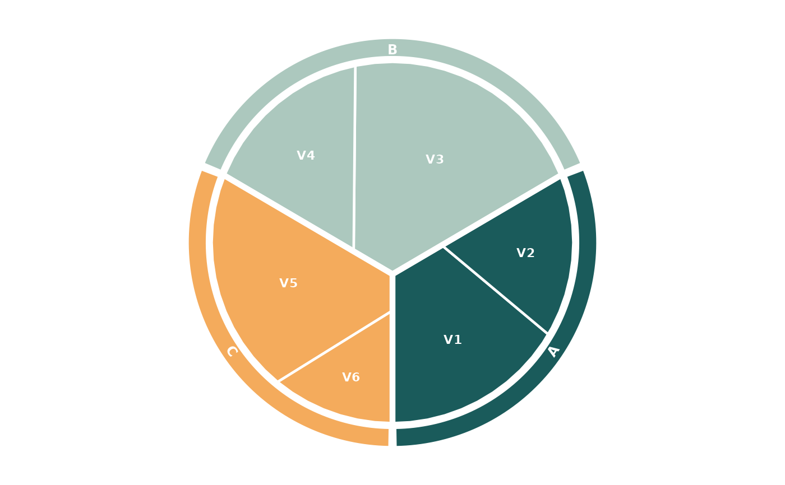

Wraps a circular Voronoi map in a decorative ring divided into one arc
segment per group (as in a Voronoi-treemap infographic). Each segment
spans the angular extent actually occupied by its group's cells, so the
ring lines up with a hierarchical layout produced by
voronoi_map(..., group =).
Usage
vm_add_ring(
p,
vm = NULL,
groups = NULL,
colors = NULL,
labels = TRUE,
curved = NULL,
palette = "Okabe-Ito",
width = 0.1,
gap = 0.02,
pad = 1,
label_col = "white",
label_size = 3.2,
border_col = "white",
border_size = 0.4
)Arguments
- p
A ggplot produced by
autoplot.voronoi_map()orggvmap().- vm
Optional
voronoi_map; taken frompwhen omitted.- groups
Optional character vector selecting and ordering which groups to draw. Defaults to all groups.
- colors
Fill colours for the segments: a vector (recycled/interpolated) or a named vector keyed by group. Defaults to the
palette.- labels
Logical, or a named character vector of display labels keyed by group.
TRUE(default) uses the group names;FALSEdraws no text.- curved
Draw labels curved along the arc using geomtextpath?
NULL(default) curves them when that package is installed and otherwise uses straight tangential text;TRUE/FALSEforce the choice.- palette
Palette used when
colorsisNULL. Default"Okabe-Ito".- width
Ring thickness as a fraction of the map radius. Default
0.10.- gap
Radial gap between the map and the ring, as a fraction of the radius. Default
0.02.- pad
Angular padding trimmed from each segment end, in degrees. Default
1.- label_col
Ring label colour. Default
"white".- label_size
Ring label size. Default
3.2.- border_col
Segment border colour. Default
"white".- border_size
Segment border width. Default
0.4.
Examples
vm <- voronoi_map(c(5, 3, 8, 4, 6, 2),
group = c("A", "A", "B", "B", "C", "C"),
clip = clip_circle(), seed = 1)
ggvmap(vm, palette = "alger") |> vm_add_ring(palette = "alger")
